New resources
My newest resources appear here first. The list updates automatically.
48 resources

File – Italian Reading: Cloze Text, Listening Task & Word Search (Scheda)

Figurina – Italian Reading: Cloze Text, Listening Task & Word Search (Scheda)

Figi – Italian Reading: Cloze Text, Listening Task & Word Search (Scheda)

Fienile – Italian Reading: Cloze Text, Listening Task & Word Search (Scheda)

Fidel Castro – Italian Reading: Cloze, Listening & Word Search

Fiaba – Italian Reading: Cloze Text, Listening Task & Word Search (Scheda)

Fertilizzante – Italian Reading: Cloze, Listening & Word Search

Ferrovia Transiberiana – Italian Reading: Cloze, Listening & Word Search

Ferrovia – Italian Reading: Cloze Text, Listening Task & Word Search (Scheda)

Felis silvestris – Italian Reading: Cloze, Listening & Word Search

Felidae – Italian Reading: Cloze Text, Listening Task & Word Search (Scheda)

Federico II di Prussia – Italian Reading: Cloze, Listening & Word Search

Minnesota – Worksheet: cloze text, listening comprehension and word search

Federico Barbarossa – Italian Reading: Cloze, Listening & Word Search

Feci – Italian Reading: Cloze Text, Listening Task & Word Search (Scheda)

Febbre – Italian Reading: Cloze Text, Listening Task & Word Search (Scheda)

Fax – Italian Reading: Cloze Text, Listening Task & Word Search (Scheda)

Favola – Italian Reading: Cloze Text, Listening Task & Word Search (Scheda)
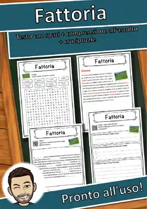
Fattoria – Italian Reading: Cloze Text, Listening Task & Word Search (Scheda)
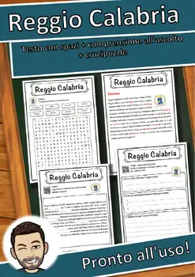
Reggio Calabria – Scheda: testo con spazi vuoti, ascolto e crucipuzzle

Fast food – Italian Reading: Cloze Text, Listening Task & Word Search (Scheda)

Faro – Italian Reading: Cloze Text, Listening Task & Word Search (Scheda)
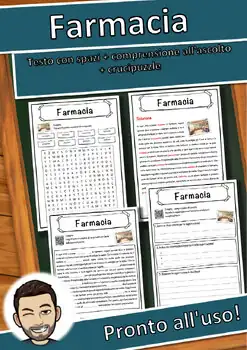
Farmacia – Italian Reading: Cloze Text, Listening Task & Word Search (Scheda)

Farina – Italian Reading: Cloze Text, Listening Task & Word Search (Scheda)
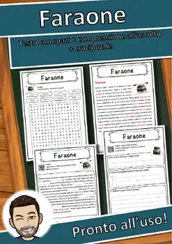
Faraone – Italian Reading: Cloze Text, Listening Task & Word Search (Scheda)

Falegname – Italian Reading: Cloze Text, Listening Task & Word Search (Scheda)

Fabbrica – Italian Reading: Cloze Text, Listening Task & Word Search (Scheda)

FBI – Italian Reading: Cloze Text, Listening Task & Word Search (Scheda)
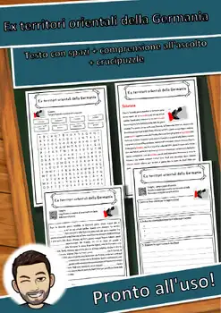
Ex territori orientali della Germania – Italian Reading Worksheet
Everest – Italian Reading: Cloze Text, Listening Task & Word Search (Scheda)
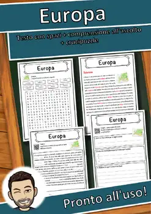
Europa – Italian Reading: Cloze Text, Listening Task & Word Search (Scheda)

Euro – Italian Reading: Cloze Text, Listening Task & Word Search (Scheda)
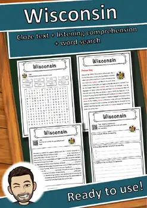
Wisconsin – Worksheet: cloze text, listening comprehension and word search
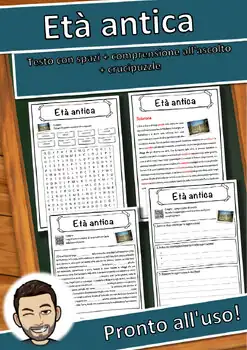
Età antica – Italian Reading: Cloze Text, Listening Task & Word Search (Scheda)

Estate – Italian Reading: Cloze Text, Listening Task & Word Search (Scheda)
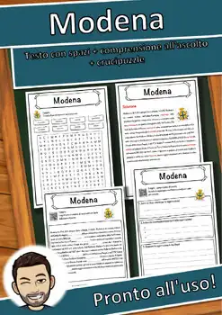
Modena – Scheda: testo con spazi vuoti, comprensione all'ascolto e crucipuzzle
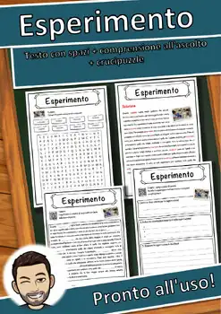
Esperimento – Italian Reading: Cloze Text, Listening Task & Word Search (Scheda)
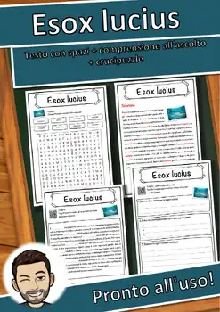
Esox lucius – Italian Reading: Cloze Text, Listening Task & Word Search (Scheda)

Escavatore – Italian Reading: Cloze Text, Listening Task & Word Search (Scheda)

Erosione – Italian Reading: Cloze Text, Listening Task & Word Search (Scheda)
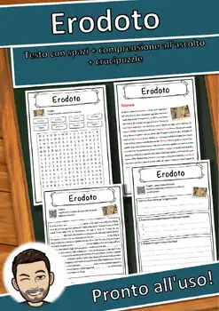
Erodoto – Italian Reading: Cloze Text, Listening Task & Word Search (Scheda)
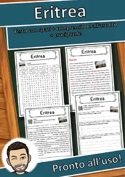
Eritrea – Italian Reading: Cloze Text, Listening Task & Word Search (Scheda)

Erich Kästner – Italian Reading: Cloze, Listening & Word Search

Equus – Italian Reading: Cloze Text, Listening Task & Word Search (Scheda)

Epilessia – Italian Reading: Cloze Text, Listening Task & Word Search (Scheda)

Energia solare – Italian Reading: Cloze, Listening & Word Search

Energia rinnovabile – Italian Reading: Cloze, Listening & Word Search

Energia nucleare – Italian Reading: Cloze, Listening & Word Search
No resources found – try a different search term or filter.